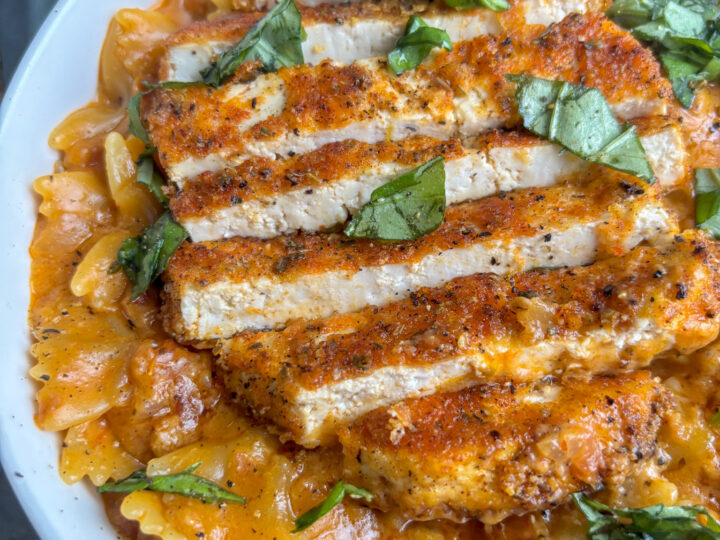

Home
Marry-Me Tofu Recipe

Description
A vegan version of the viral Marry-Me Chicken recipe!
A succulent grilled tofu fillet cooked in a creamy, rich Marry-Me sauce!
Ingredients
- 32oz Extra Firm Tofu
- Chopped Basil or Parsely (for garnish)
Marinade
- 1/4 cup Soy Sauce
- 1/4 cup Nutritional Yeast
- 1tsp Garlic Powder
- 1tsp Smoked Paprika
- 2Tbsp Hot Sauce
- 1/4 cup Vegan Mayo (or Neautral Oil)
- 2Tbsp Water
- 2tsp Vinegar (or Lemon Juice)
If Frying
- 1/4 cup Flour
- Salt & Pepper
Marry Me Sauce
- 2Tbsp Vegan Butter (Olive Oil)
- 5 cloves Minced Garlic
- 1Tbsp Italian Seasoning
- 1tsp Red Chile Flakes or Calabrian Chiles (for some heat)
- 2 cups Vegan Chicken Broth (or Veggie Broth)
- 1/2 - 3/4 cup Cashew Cream
- 1/2 cup Vegan Parmesan (or 2Tbsp Nutritional Yeast)
- 2-3tsp Dijon Mustard
- 1/3 cup Sun-Dried Tomatoes
- Salt & Pepper to taste
Cashew Cream
- 1/2 cup Raw Cashews (unsalted)
- 1 cup Plant Milk (unsweetened)
- Salt to taste
Steps
Cashew Cream
- Soak cashews in boiling water for 10 minutes. The drain them and blend them with the plant-milk and salt in a high speed blender until smooth.
Marinade
- Simply mix and combine the ingredients.
Tofu Filets
- Make sure to use super firm tofu, the kind that's vacuum sealed and doesn't need pressing. Otherwise, if you are using extra firm, you should press it for at least 30 minutes.
- Cut each block of tofu into 3 filets. Optional but recommended, carve each rectangular filet into a more chicken breast like shape. You can also shave off the edges to make them smoother if you choose as well.
- Lightly score the filets on each side, but only score them one way (as opposed to cross hatch). This will help the marinade penetrate as well as create a more "shreddy" type of texture.
- Once the filets are looking good, coat them in the marinade. Marinade for at least 30 minutes to overnight.
- Get a pan up to medium high heat, add a little oil and then grill the filets for about 5 minutes per side. Feel free to brush the leftover marinade before and after you flip them. Once they are cooked to your liking remove from the heat.
- If you want to shallow fry the filets, let them cool after grilling. Then dredge them in the flour and salt and pepper. Fry them in a some oil (I used 1/4 cup for a 12" skillet) over medium heat until golden brown. Remove the the pan and set aside.
Marry Me Sauce
- In the same skillet that you grilled or fried the tofu, over medium low heat, add the vegan butter and melt. Then add in the minced garlic, calabrian chiles or red pepper flakes, and Italian seasoning. Stir to combine and cook for 1 minute.
- Stir in the vegan chicken or veggie stock and then the cashew cream. Start with 1/2 cup of the cashew cream and add more later as needed. It will thicken as it heats up. Add in the dijon mustard and whisk to combine. Raise the heat to medium and bring to a simmer.
- Add in the sun-dried tomatoes and vegan parmesan (or nutritional yeast) and stir to combine.
- The sauce should thicken, but if it's too thick, add a splash of veggie stock until it's at your desired consistency. Taste for seasoning.
- Add the tofu filets back in, simmer for 2 – 3 minutes, then serve immediately with pasta, rice or mashed potatoes and enjoy!